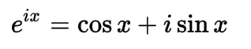
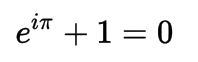
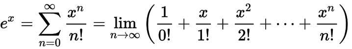

Leonhard Euler
Leonhard Euler
Leonhard Euler developed several popular mathematic notations as well as theories and equations. Euler's theories and equations are most commonly used in calculus.
Euler's Notations- Capital sigma for summations
- e for base of natural logarithms
- a, b, c, for sides of a triangle
- A, B, C for the opposite angles
- (f) for function
- i for the square root of -1
Euler's Formula
Euler's formula establishes a relationship between functions in trigonometry and complex number theory. Euler's formula can also be applied to topology.
Euler's Identity (also known as Euler's Equation)
e is the base of natural logarithms, Euler's number
i is an imaginary number
π is the ratio of a circle's circumference to its diameter
Euler's identity is Euler's most well known single equation and is considered one of the most beautiful equations in mathematics because of it's aesthetic simplicity but mathematical complexity. The equation includes 1, 0, π, e, and i, as well as addition, multiplication, and exponents, all important mathematical concepts. Power Series
A power series signifies infinite sums.
